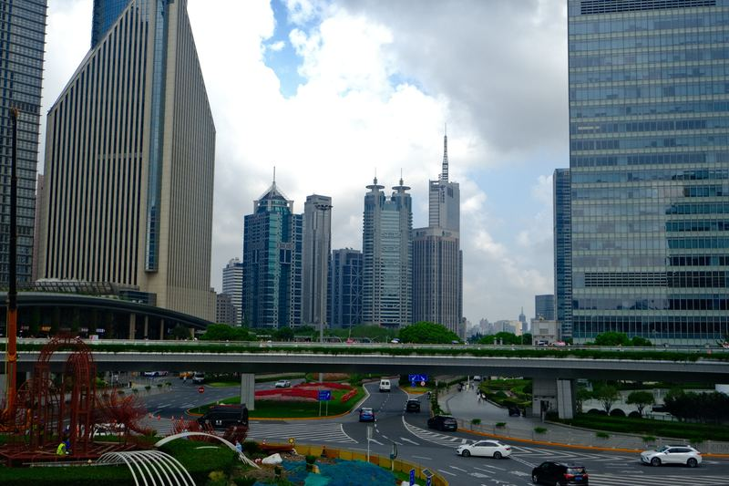
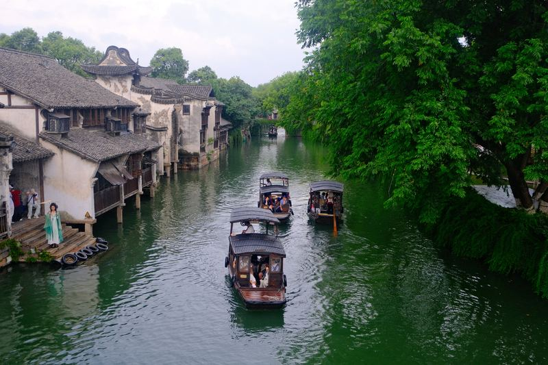
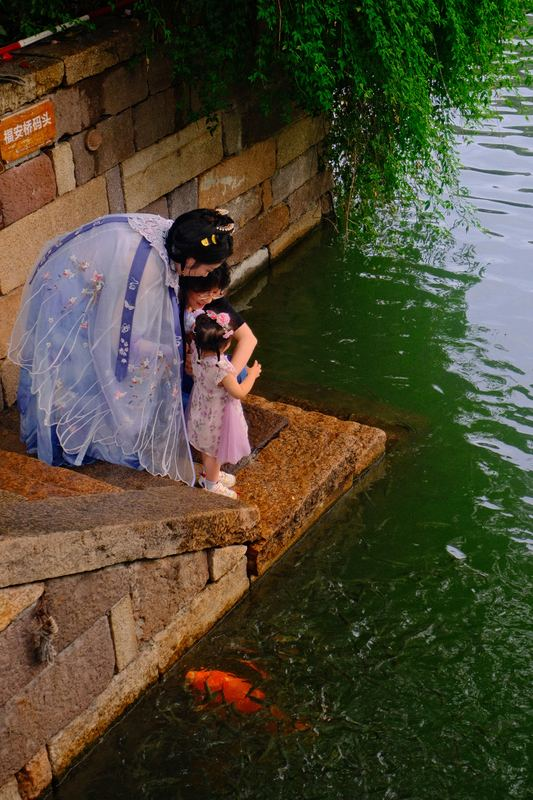

Landscape · Album 05 / 13
The towers in Lujiazui, a quiet tree-lined street, and one of the old water towns outside the city.



 Next albumPortraits at USydUniversity of Sydney · 2026 · 17 photos
Next albumPortraits at USydUniversity of Sydney · 2026 · 17 photos
Want photos like these? DM me on Instagram or call 0490 324 875.